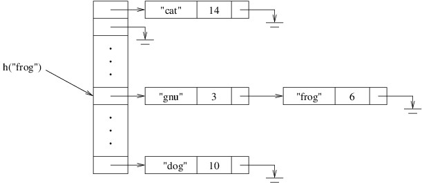

Hash Tables
Hash Tables
Throughout our discussion of dictionaries over the last three chapters, we have taken advantage of the fact that the keys were sorted when looking up specific keys. In this chapter, we examine a rather surprising result — that we can achieve better performance if we don’t have to keep the keys in any particular order (i.e., so that we can process them in that order). The technique uses a data structure known as a hash table, which is the underlying data structure in the .NET Framework’s Dictionary<TKey,TValue> class.
A hash table is typically organized as an array of linked lists. The individual cells in the linked lists each store a key and a value. Associated with this structure is a hash function, which takes a key as its parameter and computes an array location. This array location contains a reference to the beginning of the linked list that will contain the given key if it is in the hash table. Thus, in order to find a key in a hash table, we first apply the hash function to the key, then search the linked list at the location computed by the hash function. The following picture illustrates the layout of a hash table in which the keys are strings and the values are ints, and the hash function is denoted by h:

In order to avoid cluttering the above picture, the strings are shown inside the linked list cells, even though string is a reference type.
In order to achieve good performance, we want all of the linked lists to be short. This requires, among other things, that we make the array sufficiently large. We therefore increase the size of the array as the number of elements increases.
The above overview of hash tables reveals one of the challenges in using a dictionary implemented using a hash table. Specifically, whenever we define a new key type, this type is unknown to the dictionary implementation. How then can it compute a hash function on an instance of this type? The short answer to this question is that the hash function is divided into two parts. The first part of the hash function is implemented within the key type itself, where code can access the implementation details of the key. Specifically, every type in C# has a public GetHashCode method, which takes no parameters and returns an int. Any new type that redefines how its elements are compared for equality should override this method so as to ensure that it returns the same value whenever it is called on equal instances. The second part of the hash function is implemented within the dictionary itself. This part takes the int from the first part and uses it to compute an array location. We will discuss both parts of the hash function computation in more detail in later sections.
In the next few sections, we will present the implementation details of a hash table. We will then discuss how a dictionary can facilitate a technique called memoization, which can be used to improve dramatically the performance of certain algorithms. This discussion will provide a motivation for defining a new key type. We then take a close look at how equality is handled in C#, as we will need to be able to implement equality tests if we are to define new types that can be used as keys. We then complete the discussion on defining new key types by illustrating how the GetHashCode method can be implemented.